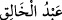

adıdır. Bugün “Ba’l-Bekke” olarak anılan şehrin adıdır. Bu put altından olup 20 zira
uzunluğunda idi. Putun dört tane yüzü vardı. Gözlerinde iki büyük yakut bulunuyordu.
Şamlılar bu putla fitneye düşüp yoldan saptılar ve bu putu pek yücelttiler; hatta onun
için 400 tane özel hizmetçi atadılar. Bu hizmetçileri ilah saydıkları putun peygamberleri
olarak kabul ettiler. Şeytan putun içine girer, kendi sapık şeriat prensiplerini konuşur,
anlatırdı. Bu hizmetçiler de şeytanın bu konuşmalarını ezberleyip diğer insanlara
öğretirlerdi.
Burada Allah Teâlâ’nın onların babalarının da Rabbi olduğuna vurgu yapması
kendileri gibi babalarının görüşlerinin de bâtıl olduğunu bildirmek içindir. Sonra
“yaratma” sözü yoktan var etme, icat ve inşa etme gibi mânâlarda hakikattir. Yine
“yaratma” sözü takdir ve tasvir mânâlarında da kullanılır. Burada kastedilen mânâ da
budur. Zira icad etme, yoktan var etme mânâsında yaratma işi Allah’tan başkasında
tasavvur edilemez. Râğıb der ki, şâyet “Allah Teâlâ’nın “Yapıp-yaratanların en güzeli
olan Allah pek yücedir.” (el-Mü’minûn 23/14) kavli, yaratma ile Allah Teâlâ’dan
başkasının da nitelenebileceğine delâlet eder” denilirse şu şekilde cevap verilir: burada
mânâ “Allah takdir ve tasvir edenlerin en güzelidir” demektir. Yahut bu ifade onların
yaptıkları putların da yaratıp yoktan var edeceğine inanmalarına göredir. Sanki şöyle
buyrulmuştur: Diyelim ki onların inancına göre burada bir çok mucit ve yaratıcılar
vardır; işte Allah Teâlâ onların en güzelidir. Allah Teâlâ şöyle buyuruyor: “Yoksa
O’nun yarattığı gibi yaratan ortaklar buldular da bu yaratma onlarca birbirine
benzer mi göründü? ...” (er-Ra’d 13/16)
Muhakkik sûfîler nezdinde “__WORD__ (yaratıcının kulu) demek, eşyayı Hak Teâlâ
hazretlerinin muradına muvafık olarak takdir edip değerlendiren demektir. Zira Allah
Teâlâ bu kuluna yaratma ve takdir etme sıfatıyla tecelli etmiştir. Artık bu kul ancak
Allah Teâlâ’nın takdiri ile hisseder ve geleceği görür.
İmam Gazzâlî (r.a.) der ki, kul riyazat yoluyla nefsi ile mücâhede etmede nefsini ve
halkı yönetmede daha önce hiçbir örneği olmayan bazı işler ve prensipler ortaya
koyarak münferit icraat ve faaliyet yapacak duruma geldiği zaman bu kimse bu icadında
daha önce benzeri olmayan bir şeyi icat ve inşa etmiş gibi olur. Mesela satranç oyununu
ilk defa ortaya koyan kimseye daha önce benzeri olmayan bir şeyi yaptığı için “O işin
mucidi” denilir.
Fakir (Bursevî) der ki, bazı kâmil veli ve mürşidler kendi yerlerine aynen kendilerine
benzeyen bir “bedel” koyarlar ve aynı anda değişik yerlerde olurlardı. Yukarıda
Kadîbü’l-bân’dan rivâyet edilmişti. Bu durum bu makamın sırlarındandır. Zira bu kâmil
insan Allah Teâlâ’nın “__WORD__ (yaratıcı) ismine mazhar olup sırrına vakıf olduktan sonra
ancak buna muktedir olabilir. Bunu böyle bil ve bu sırrı ifşa etme! Kendini ve bu işin
esrarını koru ve bu sırrı ona yabancı olanlara karşı susma orucu tut!